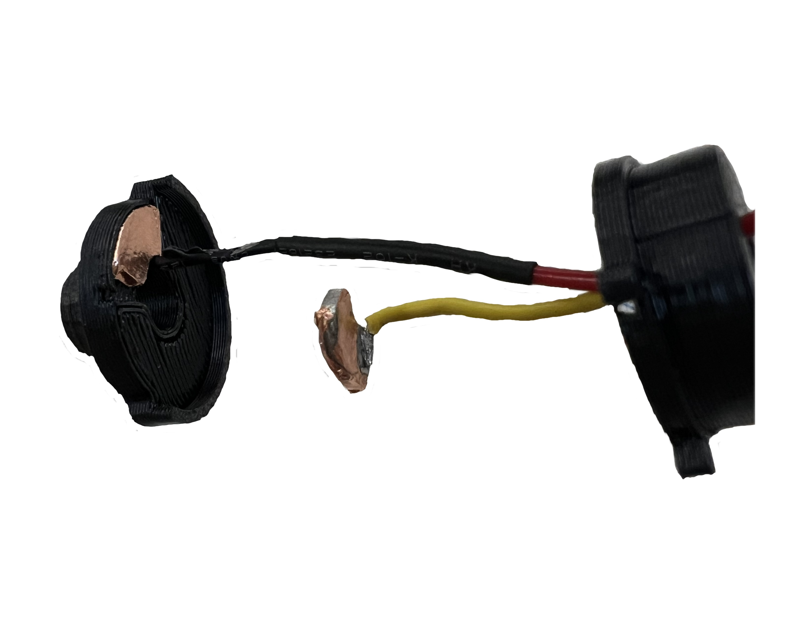
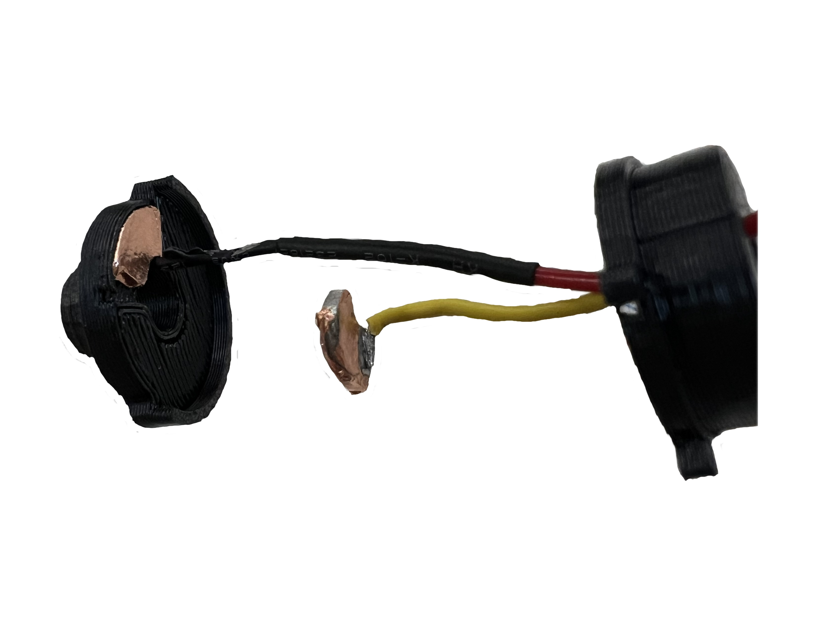

<div class="textcontainer">
<p class="margin"> </p>
<h2>Week 7: Electronic Outputs</h2>
<h2> Minimum Viable Product for Final Project</h2>
<br><br>
<h4><u>"Digital" Record Player Concept: </u> For this project to show viability, I wanted to create a switch
that would work for a needle to start and stop music. Being a music player I also needed to build a functional
player that would work off the switch </h4>
<br><br>
<h3><u>Step 1:</u>The Switch</h3>
<h4>The switch took many iterations that allowed the emectronics to be hidden giving it a seamless design. To allow
the switch to rotate while sending the signal I had to build internal clearances with tight tolerances all around a shaft
that acts as the base to the needle arm.
</h4>
<br><br>
<iframe id="vs_iframe" src="https://www.viewstl.com/?embedded&url=https%3A%2F%2Fty-combs1.github.io%2FPS70%2F07_outputs%2FButton_lower.stl&color=white&bgcolor=transparent&shading=flat&noborder=yes&clean=yes&orientation=front" style="border:0;margin:0;width:100%;height:100%;"></iframe>
<iframe id="vs_iframe" src="https://www.viewstl.com/?embedded&url=https%3A%2F%2Fty-combs1.github.io%2FPS70%2F07_outputs%2FButton_upper.stl&color=white&bgcolor=transparent&shading=flat&noborder=yes&clean=yes&orientation=right" style="border:0;margin:0;width:100%;height:100%;"></iframe>
</div>
 
